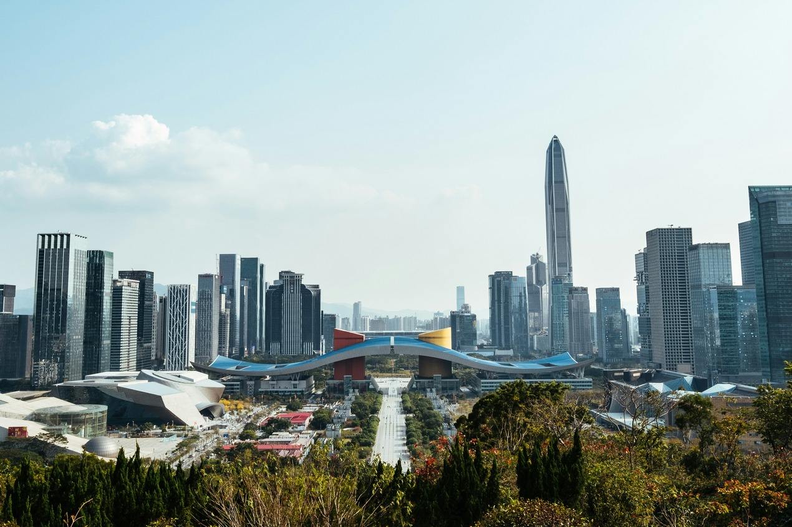

https://images.unsplash.com/photo-1522614288668-a697127e9b21?q=80&w=1740&auto=format&fit=crop&ixlib=rb-4.1.0&ixid=M3wxMjA3fDB8MHxwaG90by1wYWdlfHx8fGVufDB8fHx8fA%3D%3D
Shenzhen ist die Stadt mit dem höchsten Pro-Kopf-Einkommen in China (ohne Hongkong und Macau). Tragende Säulen der lokalen Wirtschaft sind sowohl die Elektronik- und die Telekommunikationsindustrie als auch diverse Innovationstreiber. Seit 2008 ist Shenzhen als UNESCO City of Design Teil des Creative Cities Network.